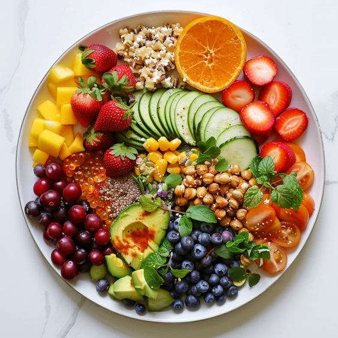
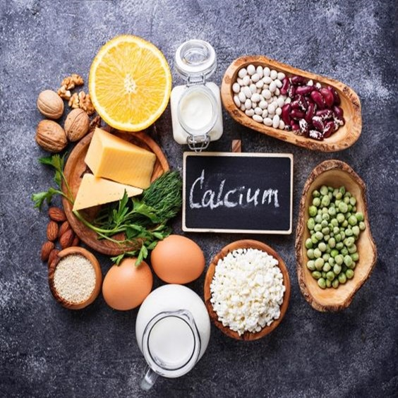
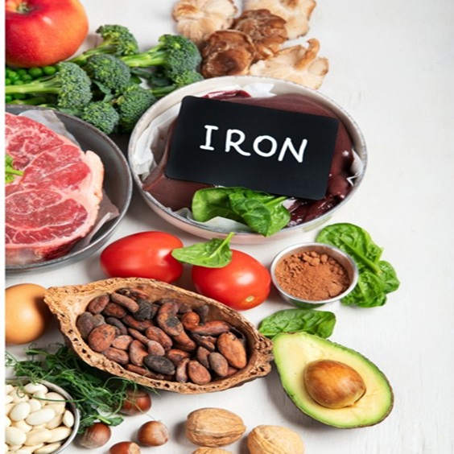
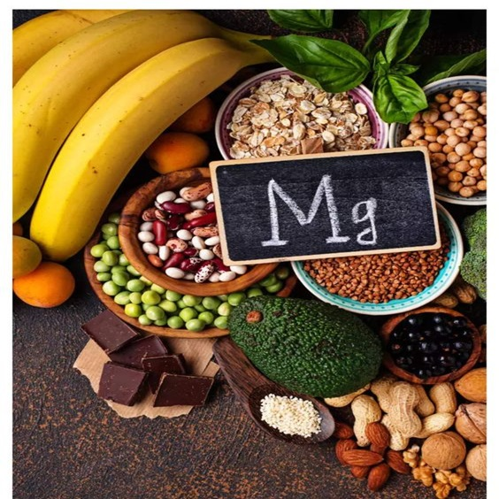
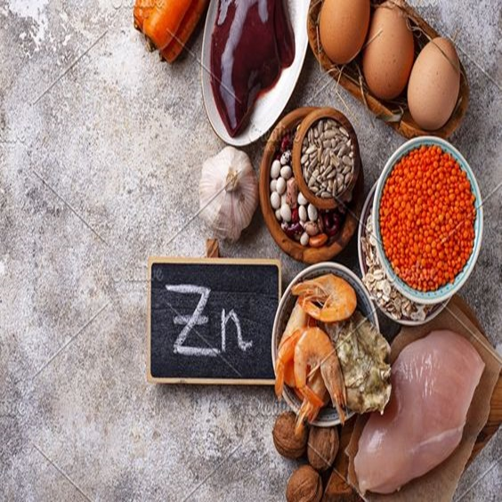

Boost Your Minerals for Optimal Health
Minerals are essential nutrients that play a key role in keeping your body functioning properly. From supporting bone health to boosting your immune system, minerals are vital for overall well-being. In this article, we’ll explore some key minerals your body needs and how to ensure you’re getting enough of them.
1. Calcium: The Bone Builder
Calcium is well-known for its role in building and maintaining strong bones and teeth. It’s also important for muscle function, nerve transmission, and blood clotting.
Top sources: Dairy products like milk, yogurt, and cheese; leafy greens such as kale and spinach; fortified plant-based milks.
2. Iron: The Oxygen Transporter
Iron helps transport oxygen from your lungs to the rest of your body, keeping your muscles and organs energized.
Top sources: Red meat, poultry, fish, beans, lentils, spinach, and fortified cereals.
3. Magnesium: The Relaxation Mineral
Magnesium plays a critical role in over 300 enzyme reactions in the body, including those that help regulate muscle and nerve function.
Top sources: Nuts, seeds, leafy greens, whole grains, and avocados.
4. Zinc: The Immune Booster
Zinc is vital for a strong immune system, wound healing, and maintaining your sense of taste and smell.
Top sources: Meat, shellfish, legumes (like chickpeas and lentils), seeds, and nuts.
Boost your mineral intake today to maintain optimal health and well-being!